Un'immersione visiva e sonora tra i volti dei tonnarotti, le carte d'archivio antiche, le mappe della costa e i canti d'epoca.
Digitalizzazione in corsoLe immagini d'epoca mostrate provengono da archivi storici in pubblico dominio (Wikimedia Commons e Archive.org). Le fotografie e i documenti autentici della tonnara di Gallipoli verranno pubblicati mano a mano che la digitalizzazione dell'archivio procederà.
Clicca su un'immagine per ingrandirla a tutto schermo. Le fotografie d'epoca provengono da archivi in pubblico dominio; le immagini autentiche della tonnara di Gallipoli saranno aggiunte al termine della digitalizzazione.
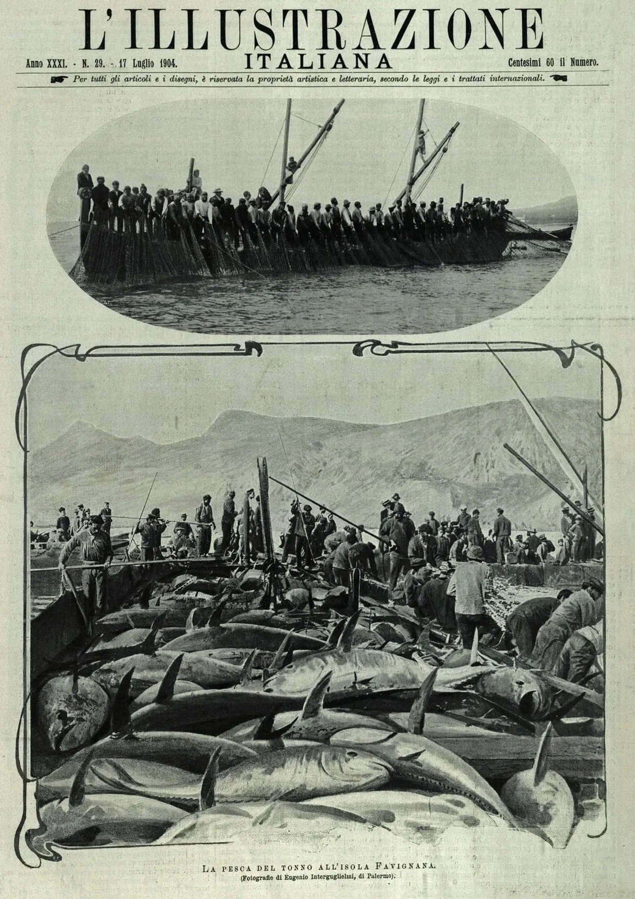
Foto d'epoca • 1904I tonnarotti all'opera tra le reti, in una fotografia di Eugenio Interguglielmi (1904).
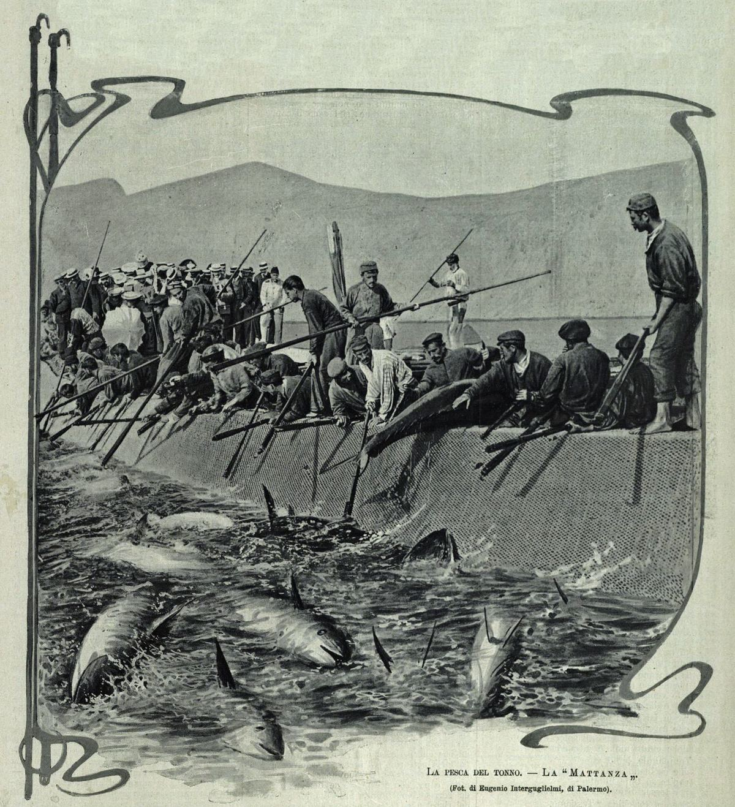
Foto d'epoca • 1904Il momento culminante del rito della pesca, fotografato nel 1904 da Interguglielmi.
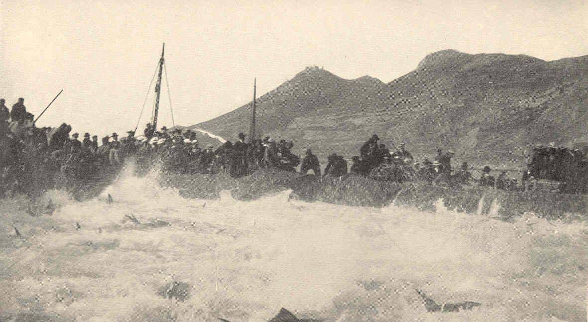
Incisione • 1909Incisione del 1909 (Charles F. Holder): gli scafi da lavoro e la manovra delle reti.
Foto storiche e documenti della collezione Tricarico, digitalizzati per il patrimonio visivo della tonnara.
I documenti più antichi parlano di trasferimenti di carte, del Libro Rosso e della dispersione di interi fascicoli. Chi visita questa collezione trova tracce di un archivio che ha rischiato di perdersi e di una memoria che esige tutela.
“L’intero archivio preunitario che trovavasi accatastato nel teatro Garibaldi, fu ceduto dal Comune ad un rigattiere...”
Fonte: Gallipoli_Archivio_delle_scritture_antic.pdf
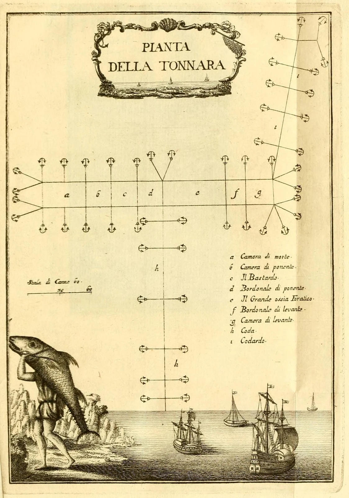
Documento StoricoDalla Anfibi e pesci di Sardegna di Francesco Cetti (1777): la geometria di pedale e camere che componeva l'impianto fisso della tonnara.
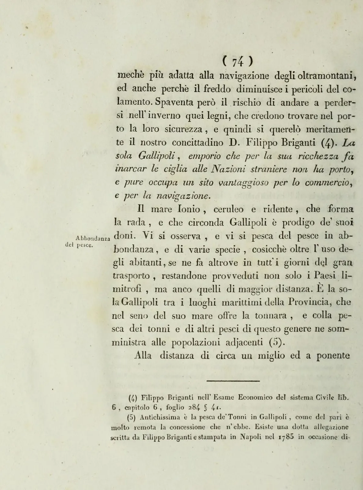
Bartolomeo Ravenna, Memorie istoriche della città di Gallipoli (1836), p. 106
"Il mare Ionio, ceruleo e ridente, che forma la rada e che circonda Gallipoli, è prodigo de' suoi doni. Vi si osserva e vi si pesca del pesce in abbondanza e di varie specie… ed è la sola Gallipoli tra i luoghi marittimi della Provincia, che nel seno del suo mare offre la tonnara, e colla pesca dei tonni e di altri pesci di questo genere ne somministra alle popolazioni adiacenti."
La pagina in cui Bartolomeo Ravenna ricorda che "è la sola Gallipoli tra i luoghi marittimi della Provincia, che nel seno del suo mare offre la tonnara".
Dal Kitab-ı Bahriye (Libro della Navigazione) di Piri Reis, l'ammiraglio e cartografo ottomano: le carte che ritraggono la costa del Salento, il golfo di Taranto e il Mediterraneo al tempo in cui la tonnara di Gallipoli era tra le più ricche del Regno.
Fonte: Piri Reis, Kitab-ı Bahriye, manoscritto W.658 del Walters Art Museum (Baltimore) • Dominio pubblico (CC0)
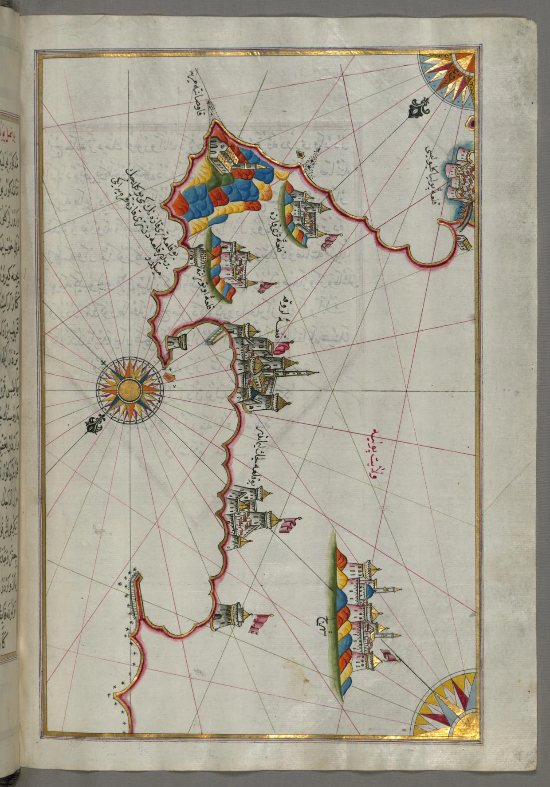
Piri Reis • XVI sec.La costa ionica del Salento da Lecce fino a Gallipoli, con il golfo che ospitava la tonnara.
Kitab-ı Bahriye, f. 206b • W.658.206B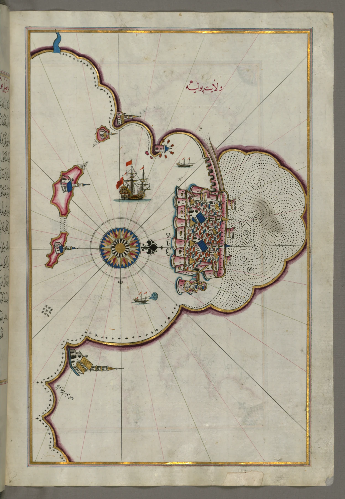
Piri Reis • XVI sec.L'estremità settentrionale del golfo di Taranto, a nord della costa di Gallipoli.
Kitab-ı Bahriye, f. 208b • W.658.208B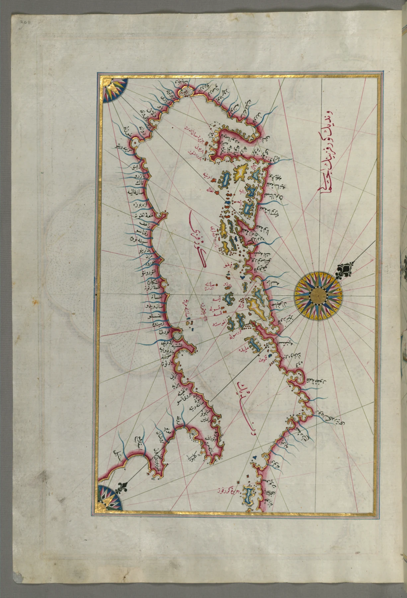
Piri Reis • XVI sec.La costa adriatica e le sue isole: il versante opposto della penisola salentina.
Kitab-ı Bahriye, f. 208a • W.658.208A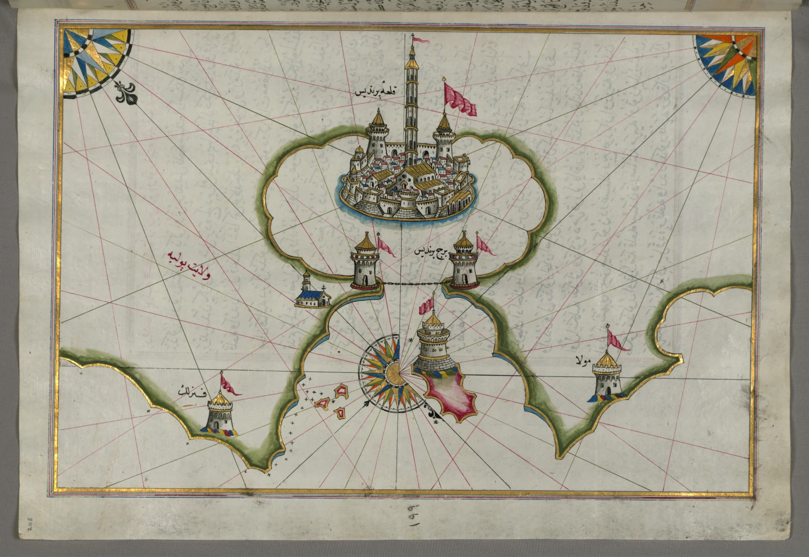
Piri Reis • XVI sec.Il porto di Brindisi (Parindis), storico scalo dell'Adriatico a nord di Gallipoli.
Kitab-ı Bahriye, f. 205a • W.658.205A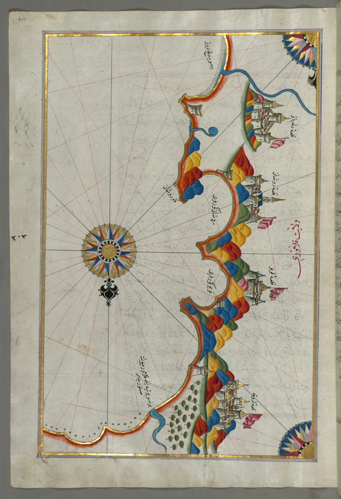
Piri Reis • XVI sec.La costa ionica della Calabria presso Rossano: il lato opposto del golfo di Taranto.
Kitab-ı Bahriye, f. 210a • W.658.210A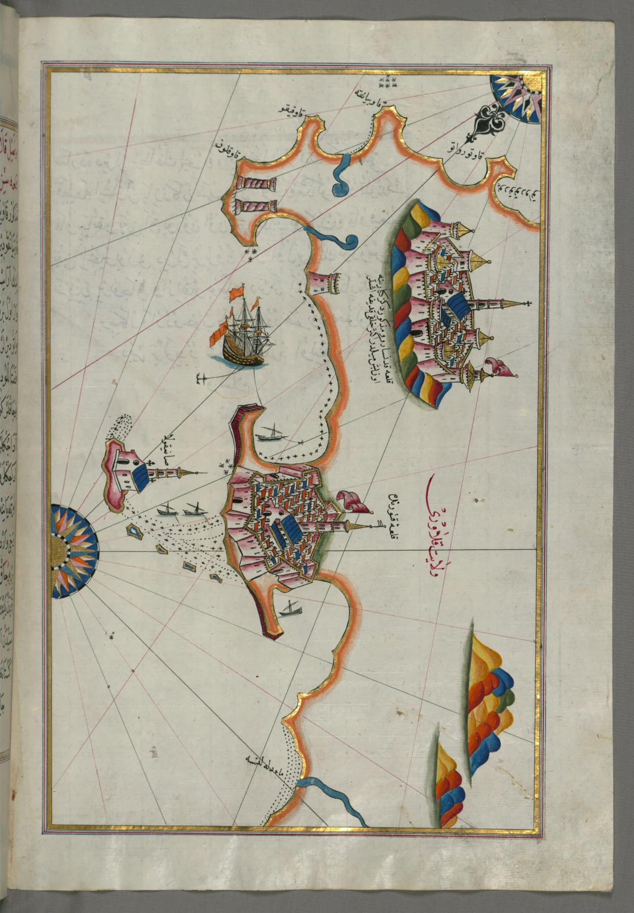
Piri Reis • XVI sec.Crotone e Catanzaro sulla costa orientale della Calabria, lungo le rotte del tonno.
Kitab-ı Bahriye, f. 211b • W.658.211B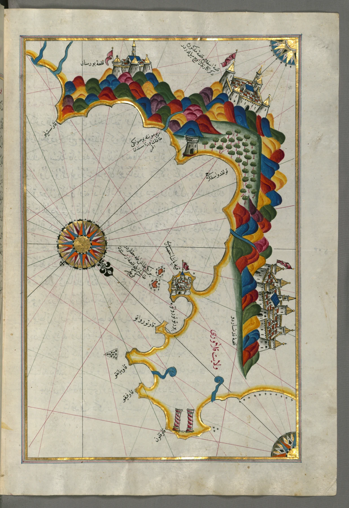
Piri Reis • XVI sec.Il tratto di costa calabrese da Catanzaro a Squillace, sul golfo di Taranto.
Kitab-ı Bahriye, f. 212b • W.658.212B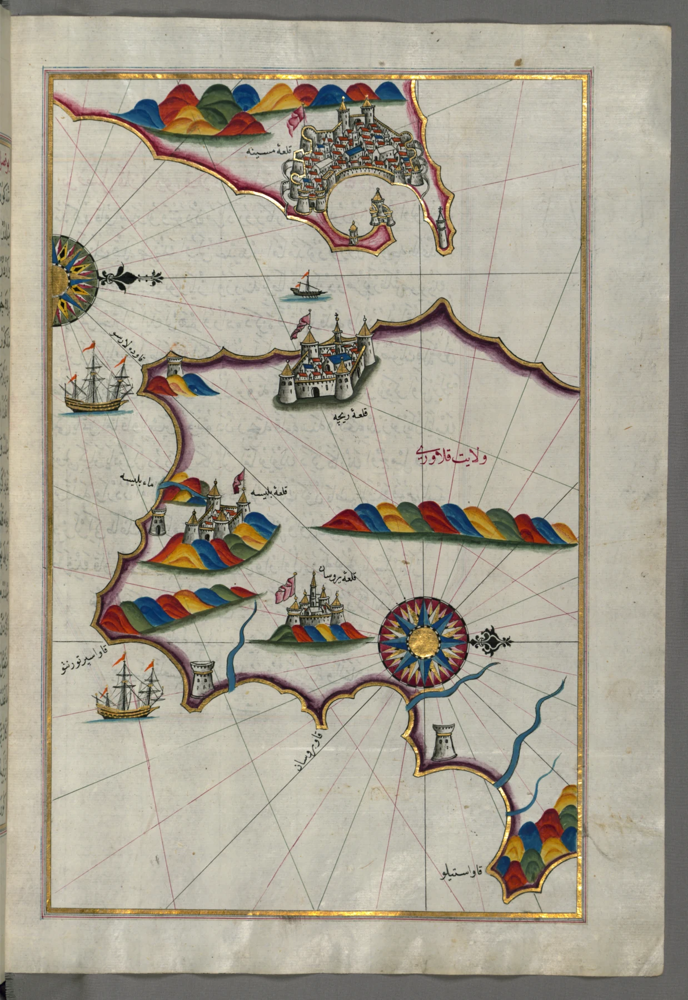
Piri Reis • XVI sec.L'estremità meridionale della Calabria e lo Stretto di Messina, al limite meridionale del golfo.
Kitab-ı Bahriye, f. 213b • W.658.213B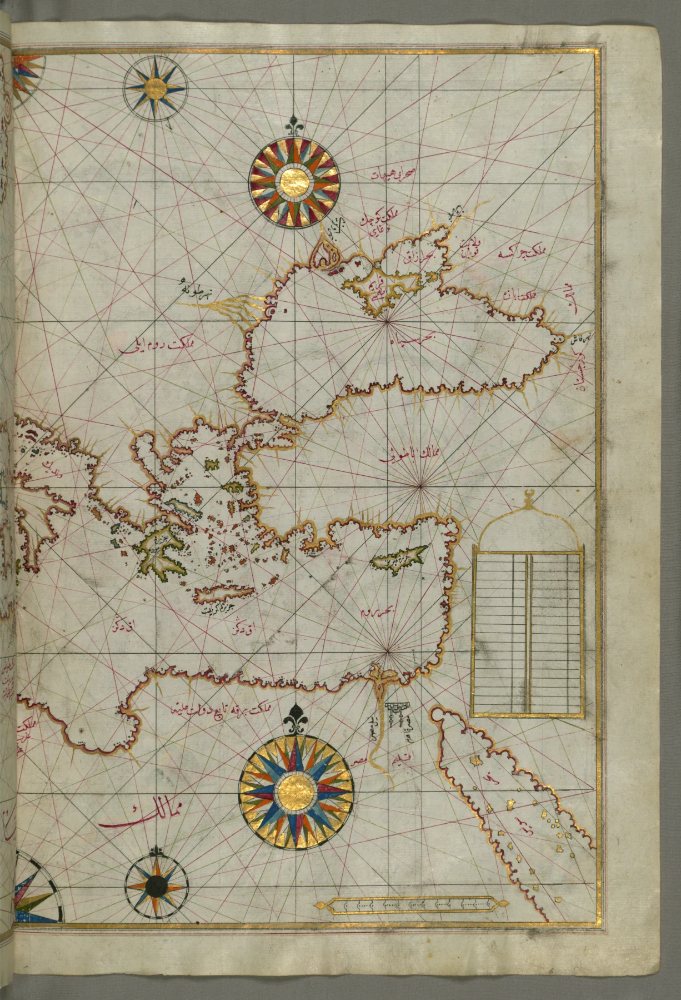
Piri Reis • XVI sec.Visione d'insieme del Mediterraneo orientale, del mar Egeo e del Mar Nero.
Kitab-ı Bahriye, f. 63b • W.658.63B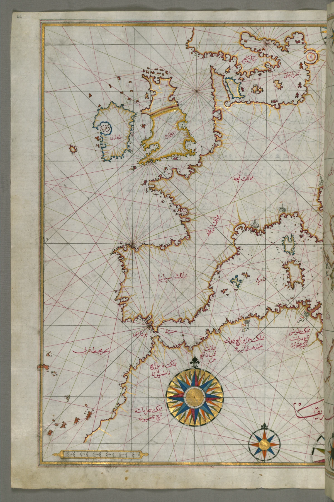
Piri Reis • XVI sec.L'Europa occidentale e il Nord Africa in un'unica carta di navigazione.
Kitab-ı Bahriye, f. 64a • W.658.64AIl nucleo documentario originale è consultabile in sede. Di seguito l'inventario descrittivo delle serie e dei registri: un primo strumento di lavoro per gli studiosi.
| Voce | Contenuto | Periodo | Conservazione | Accesso |
|---|---|---|---|---|
| Libro Rosso I | Privilegi e concessioni reali dell'Università (Comune) di Gallipoli, tra cui il diploma di Carlo V (1526) sul monopolio delle acque. | XVI sec. | Buono (restauri in corso) | In sede |
| Libro Rosso II | Continuazione del registro: concessioni, dazi e delibere comunali relative alle acque giurisdizionali. | XVI–XVII sec. | Discreto | In sede |
| Fascicoli "Tonnara Comunale" | Serie documentaria sull'amministrazione e sulla concessione della tonnara comunale. | XIX sec. | Frammentario | In sede |
| Verbale di trasferimento dell'archivio (1833) | Verbale del cancelliere Carlo Mazzarella, firmato dal sindaco Francesco Pasca, sul trasferimento dell'archivio antico del Comune. | 1833 | Digitalizzato | PDF ↓ |
Le segnature archivistiche definitive saranno pubblicate a seguito delle operazioni di inventariazione. Per la consultazione, utilizza il form di contatto per i ricercatori.
Scarica i testi originali legati alle fonti storiche e alla tonnara.
I canti ritmici utilizzati dai tonnarotti per cadenzare lo sforzo a mani nude sulle reti.
Registrazione etno-musicale d'epoca • Voce del Rais e ciurma
Audio in preparazioneLa registrazione verrà resa disponibile al termine della digitalizzazione dell'audioteca d'archivio.